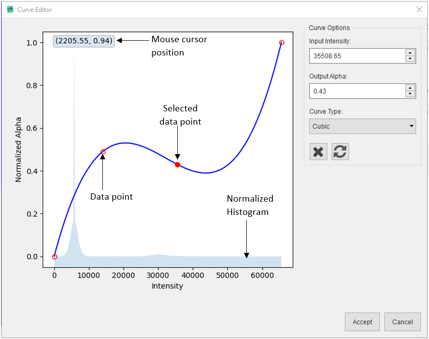

Insert Volume¶
Volumes may be added from Nexus files (HDF5 files conforming to the NXtomoproc standard), or from a stack of TIFF files. Both options are detailed below
Import a Volume from Nexus¶
The Nexus file must conform to the Nexus standard NXtomoproc. Click Insert > Sample > Volume > Nexus File… and browse to the location of the Nexus file and select it. The volume will be loaded into memory.
Note
The file extension should be .nxs, or .nex however the file structure must conform to the standard to be loaded
Import a Volume from TIFF Files¶
The TIFF files should have the .TIFF or .TIF extension and should be named with a sequential numbering system to ensure the files are loaded in the correct order. To load the volume, Click Insert > Sample > Volume > TIFF Files… and in the Load Volume dialog, select the folder containing the TIFF files, then specify the voxel size and the coordinates of the volume centre. Click the Load Volume button and the volume will be loaded into memory.
{kind=link}
Using the Curve Editor¶
The curve editor can be used to change the alpha values used to render the different intensity values in the volume. After a volume is loaded, the curve editor can be opened by clicking the button in the toolbar. The curve editor dialog consists of two sections: a plot widget (left) and curve options (right):
{kind=link}
{kind=link}
The plot widget shows a normalized histogram (i.e. values scaled between 0 and 1) of the volume in the background. The curve used to generate the alpha values for the volume is drawn in the foreground with the intensity values in the X axis and normalized alpha values in the Y axis. The data points used to generate the curve are represented with red circle outline markers and the selected marker is a red filled circle marker. A data point can be added to the curve by left clicking in the desired XY location, the curve will be redrawn to include the new data point and that point becomes the selected data point, this can be changed by left clicking on another marker. A data point’s position can be adjusted by left clicking on its marker and dragging the marker to a new location, dragging the selected marker over another marker will merge that marker to the selected one. The curve will also be redrawn in real-time to reflect the adjusted marker position. The volume in the 3D scene will also be redrawn when the mouse button is released to show a preview of the alpha values generated with the curve. The following can be performed via the curve options:
The selected data point (filled red marker) can also be adjusted by typing in the required the Input intensity and/or Output alpha.
The curve type can be changed from Cubic to Linear or vice versa via the dropdown.
{kind=link}
The selected data point can be deleted by clicking the button.
The curve can be reset to the initial curve by clicking the
 button.
button.
{kind=link}
After modifying the curve, the new curve can be saved by clicking the Accept button or rejected by clicking the Cancel button.